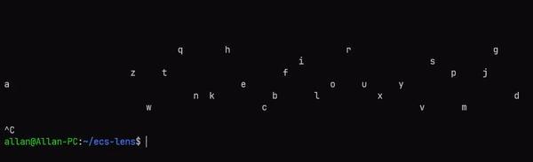

Posted on August 14, 2023
Entity Component Systems (ECS) are the new hot thing in game development. Both Unity and Unreal have adopted them, with major improvements compared to the classic object orientated style. I’ve been using them for a while now, and I’ve found them to be a great way to organize game code. In this post I wanted to implement my own ECS in Haskell, while using lenses to make it very concise. I’ll also show how to use the ECS to implement a simple physics simulator.
What is ECS?
ECS is a design pattern for developing games and simulations that focuses on the composition of entities, components, and systems. Here is a brief overview of each concept:
Entities are the basic units of the game world. They are usually represented by an ID or a reference, and they have no logic or data by themselves.
Components are data containers that store the attributes and state of an entity. They are usually represented by structs or classes, and they can be attached to or detached from entities at runtime. Examples of components are position, velocity, health, sprite, etc.
Systems are functions or objects that implement the logic and behavior of the game. They operate on entities that have specific components, and they can read or write the data of those components. Examples of systems are movement, collision, rendering, input, etc. The main advantages of ECS are:
Modularity: Entities can be easily created and modified by adding or removing components, without affecting the existing code or data structures.
Performance: Systems can process entities in batches, taking advantage of cache locality and parallelism. Components can also be stored in memory-efficient ways, such as arrays or pools.
Maintainability: Systems are decoupled from each other and from the data they operate on, making the code easier to understand and debug.
In our implementation I will focus on the modularity aspect, and I will show how to use lenses to make the code very concise and easy to use. Since this is in Haskell, I won’t worry about performance for our implementation, and often focusing on performance in Haskell can make the code quite ugly.
What are Lenses?
Lenses have been around for a while, but they have recently become popular in the Haskell community (for a brief history). There are two primary libraries for lenses, lens and optics. We will be using lens for this post. The basic idea of a lens is that it is a collection of a getter and a setter. So we can imagine something like this:
data Lens a b = Lens {
get :: a -> b,
set :: b -> a -> a
}These operate on b and either return an a in that b or returns a new b with the given a respectively. If we have a record we can create a lens for each field of the record:
data Foo = Foo { _bar :: Int, _baz :: Int }
makeLenses ''FooThis uses the lens library to automatically generate lenses for each field of the record using template Haskell. The generated lenses require the fields to be prepended with an underscore. We can use these lenses to get and set the fields of the record:
foo = Foo 1 2
view bar foo == 1
view baz foo == 1view is the first of many functions you will be using to work with lenses. view simply returns the value of the lens, like get. The bar and baz lenses are generated by makeLenses, and they are used to get the value of the bar and baz fields respectively. We can also use lenses to set the fields of the record:
set bar 3 foo == Foo 3 2
set baz 3 foo == Foo 1 3set does exactly what you would expect given a lens. In fact set is actually a specialized version of over, which is a more general function that takes a function and applies it to the value of the lens:
over bar (+1) foo == Foo 2 2These functions also all have operator forms:
(^.) = view
(.~) = set
(%~) = overThe first remarkable thing about lenses is that they can compose seamlessly. For example, if we have a record within a record, we can compose the lenses to get the value of the inner record:
data Foo = Foo { _bar :: Bar }
data Bar = Bar { _baz :: Int }
makeLenses ''Foo
makeLenses ''Bar
foo = Foo $ Bar 1
view (bar . baz) foo == 1Notice that the composition operator is just standard function composition, and also that the composition order is reversed. This gives us a syntax to access nested records similarly to imperative languages. A common idiom to access a deeply nested value is:
foo^.bar.baz == 1This uses the operator version of view and looks remarkably similar to imperative languages. While we can imagine the lens type as a record in reality it is a bit more complicated. The actual lens type is:
type Lens s t a b = forall f. Functor f => (a -> f b) -> s -> f tThis is where the power of lens truly shine. The type of lens is complicated because it is highly generic. There are also many more representations of a lens, but this specific representation is called a van Laarhoven lens. The s and t type parameters are the source and target types respectively. The a and b type parameters are the focus and result types respectively. The f type parameter is a functor, and it is used to generalize the lens. The forall quantifier is used to make the lens polymorphic over any functor. A simplified version of the lens type is:
type Lens' s a = Lens s s a aAnother formalization of lens are as a Store comonad (I covered the Store comonad previously):
data Store a b = Store
{ pos :: a
, peek :: a -> b
}While lens are important, in fact it is only one of many in a larger field called optics. Optics are a generalization, and they include many other types. We will briefly describe the key characteristics of the other types of optics.
- Getter is read-only view of a exactly one value.
- Setter is a write-only view of a exactly one value.
- Lens is a read-write view of exactly one value.
- Traversal is a read-write view of zero or more values.
- Fold is a read-only view of zero or more values.
- Iso is short for Isomorphism and is a lens that can be used in both directions.
- Prisms are used to extract one value out of a sum type.
There also exists subtyping between optics, for example a lens is also a getter, and a traversal is also a fold. You can find a full subtyping chart here. The most important optics for our use case are traversals and lenses. If you have a good intuition with Traversable then traversals should seem familiar, as they are just a generalized version of Traversable.
{kind=link}
ECS Implementation
Now that we have a basic understanding of ECS and lenses, let’s implement our own ECS in Haskell. We will start by defining the basic types and functions that we will need.
type System m = StateT ECSState m
data ECSState = ECSState {
_currentEntityID :: Entity,
_componentsList :: Map Entity Components
} deriving (Show, Eq)
instance Default ECSState where
def = ECSState def def
newtype Entity = ID Int deriving (Show, Eq, Ord)
instance Num Entity where
(+) (ID x) (ID y) = ID $ x + y
(*) (ID x) (ID y) = ID $ x * y
(-) (ID x) (ID y) = ID $ x - y
abs (ID x) = ID $ abs x
signum (ID x) = ID $ signum x
fromInteger x = ID $ fromInteger x
instance Default Entity where
def = ID 0The System type is a monad transformer that will be used to implement our systems. It is a state monad that will store the current entity ID and a map of components. The Entity type is just a wrapper around an integer, and it is used to identify entities. ECSState is the type of our state inside the System monad. The componentsList map is a map from entity IDs to a list of components. The Default instances are used to initialize the state with default values, for better ergonomics. Now lets define our components:
data Components = Components {
_position :: Maybe Position,
_velocity :: Maybe Velocity,
_name :: Maybe Name,
_tag :: Maybe Tag
} deriving (Show, Eq)
instance Default Components where
def = Components def def def def
newtype Position = Position (Int, Int) deriving (Show, Eq)
newtype Velocity = Velocity (Int, Int) deriving (Show, Eq)
newtype Name = Name String deriving (Show, Eq)
data Tag = Ball | Player deriving (Show, Eq)So our components are just records that contain the data for each component. The Position and Velocity types are just wrappers around a tuple of integers, and they are used to represent the position and velocity of an entity. The Name type is a wrapper around a string, and it is used to represent the name of an entity. The Tag type is an enumeration that is used to represent the type of an entity. If we wanted to add more Components we would just add more fields to the Components record. Obviously this is not extensible, but it is good enough for our purposes. Proper libraries use Template Haskell to generate the components. Now let’s define some lenses for our components:
makeLenses ''Components
makeLenses ''ECSStatemakeLenses is from the lens library, and it generates lenses for each field of the record using Template Haskell. Now let’s define a function to spawn new entities:
nextEntityID :: Entity -> Entity
nextEntityID (ID x) = ID $ x + 1
spawnEntity :: Components -> System IO Entity
spawnEntity components = do
x <- gets (^.currentEntityID)
componentsList %= insert x components
currentEntityID += 1
return xLook at how imperative spawnEntity looks! Let’s break down what this is doing. The first line gets the current entity ID from the state. ^. is view as an operator, and it is used to get the value of a lens. The second line inserts the components into the map. %= is over as an operator, and it is used to map a function to the value of a lens, and then storing it into the state. The third line increments the current entity ID. += x is equivalent to over (+x), then storing the result into the state. While the use of lenses here doesn’t give us any additional power, it does make the code very concise and easy to read.
We can implement delete entity in a similar way:
removeEntity :: Entity -> System IO ()
removeEntity entity = componentsList %= delete entityUsually in imperative implementations, deleting entities is not a trivial task. You have to make sure that you don’t leave any dangling references in each component array. With our implementation, we don’t have to worry about any of that, since our state is immutable.
That’s all for our helper functions. With these functions and lenses we can write our systems.
Bouncing Balls
Let’s write a simple physics simulation of bouncing balls. We will have a movement system that will update the position of each entity based on its velocity, and a collision to detect collisions against the walls. We will also have a rendering system that will print the position of each entity. Let’s start by implementing our movement system:
movementSystem :: System IO ()
movementSystem = do
componentsList %= fmap movement
where movement :: Components -> Components
movement c@(Components {_position = Just (Position (x, y)), _velocity = Just (Velocity (x', y'))})
= set position (clampPosition (x + x', y + y')) c
movement c = c
clamp :: Ord a => a -> a -> a -> a
clamp min' max' x
| x < min' = min'
| x > max' = max'
| otherwise = x
clampPosition :: (Int, Int) -> Maybe Position
clampPosition (x, y) = Just $ Position (clamp 0 (xSize - 1) x, clamp 0 (ySize - 1) y)
gridSize :: (Int, Int)
gridSize = (100, 10)
xSize = fst gridSize
ySize = snd gridSizeThis system is very simple. It just updates the position of each entity based on its velocity. The movement function is a helper function that does the actual movement. It takes a Components record, and it returns a new Components record with the updated position. Importantly, notice that we use normal pattern matching to select which components we want to use, if we wanted our movement system to only work for entities with the Ball tag, then we could simply add that to the pattern matching. The clamp function is a helper function that clamps a value between a minimum and a maximum. The clampPosition function is a helper function that clamps the position of an entity between the bounds of the screen. Now let’s implement our collision system:
collisionSystem :: System IO ()
collisionSystem = do
componentsList %= fmap collision
where collision :: Components -> Components
collision c@(Components {_position = Just (Position (x, y)), _velocity = Just (Velocity (x', y'))})
| x >= xSize - 1 = set velocity (Just $ Velocity (- x', y')) c
| x <= 0 = set velocity (Just $ Velocity (- x', y')) c
| y >= ySize - 1 = set velocity (Just $ Velocity (x', - y')) c
| y <= 0 = set velocity (Just $ Velocity (x', - y')) c
| otherwise = c
collision c = cThis system is also very simple. It just checks if the entity is colliding with the walls, and if it is, it inverts the velocity. Now let’s implement our rendering system:
renderSystem :: System IO ()
renderSystem = do
state <- get
let grid = replicate ySize (replicate xSize ' ')
let grid' = foldl' renderBalls grid (view componentsList state)
liftIO $ putStr "\ESC[2J"
liftIO $ putStrLn $ unlines $ reverse grid'
where renderBalls :: [String] -> Components -> [String]
renderBalls grid c@(Components {_position = Just (Position (x, y)), _velocity = Just (Velocity (x', y')), _tag = Just Ball, _name = Just (Name name)}) = set (element y . element x) (head name) gridThis system is a bit more complicated. It renders the entities as characters on a grid. The renderBalls function is a helper function that renders a single entity. It takes a grid and a Component, and it returns a new grid with the entity rendered on it. The renderSystem function uses foldl' to render all the entities, the only difference between foldl and foldl' is that the latter is strict, which usually reduces space complexity. It also uses unlines to convert the grid into a string, and putStr to print it to the console. It also uses putStrLn to print a newline at the end. The liftIO function is used to lift the IO action into the System monad. The renderSystem function also uses the ANSI escape code \ESC[2J to clear the console. Now let’s put it all together:
mainSystem :: System IO ()
mainSystem = do
let names = ['a'..'z']
forM_ names $ \name -> do spawnEntity $ Components (Just $ Position (fromEnum name `mod` xSize, (fromEnum 'z' - fromEnum name) `mod` ySize)) (Just $ Velocity ((fromEnum name `mod` 3) + 1, (fromEnum name `mod` 1) + 1)) (Just $ Name [name]) (Just Ball)
repeatingSystems
repeatingSystems :: System IO ()
repeatingSystems = do
movementSystem
collisionSystem
renderSystem
liftIO $ threadDelay 100000
repeatingSystems
main :: IO ()
main = void $ runStateT mainSystem defThe mainSystem function spawns a bunch of entities, and then it calls repeatingSystems. The repeatingSystems function calls the three systems, and then it sleeps, and then it calls itself again. The main function runs the mainSystem function with the default state. This is what you should see when you run it:

Conclusion
In this post I showed how to implement an ECS in Haskell, while using lenses to make the code very concise and easy to use. I also showed how to use the ECS to implement a simple physics simulator.
Now let’s consider the pros and cons of lenses. The main advantage of lenses is that they make the code very concise and easy to use, the lens library is ridiculously huge, and almost all Haskell code you write can be rewritten using lens, but with this massive library of combinators comes complexity. There are several types of complexity that lens bring to your project. First, is the complexity of learning the library and how to properly use different categories of optics, there is Getter, Setter, Traversal, Fold, Lens, Iso, Prism and probably more that I don’t know about, and each of these categories has its massive library of combinators. Second, is the complexity of understanding the code, while lenses can provide very concise programs, any user that tries to read code using lens without any previous experience will find themselves very lost. The generality of lenses results in difficult to understand type signatures, often defined by other categories within lenses. Third, is the complexity of debugging the code, like I stated previously the function signatures of lens combinators can be very overwhelming especially to new users, and this can make debugging very difficult, and many concepts of lenses are based on category theory, which most programmers don’t know. One particularly funny example is confusing which uses Kan extensions and the Yoneda lemma to fuse a Traversal, try explaining that to a new user. Lastly, is the extra dependencies that lenses bring to your project, the lens library is massive, and it has many dependencies, and no one wants to wait 10 minutes for their project to compile.
Overall, I think lenses are a great tool, and they can be used to make your code very concise and easy to use, but they are not a silver bullet, and they should be used with caution. I think the best way to use lenses is to use them sparingly, and only use them when they make the code more concise and easier to use.
I hope you enjoyed this post, and I hope you learned something new. The full source code can be found on GitHub.